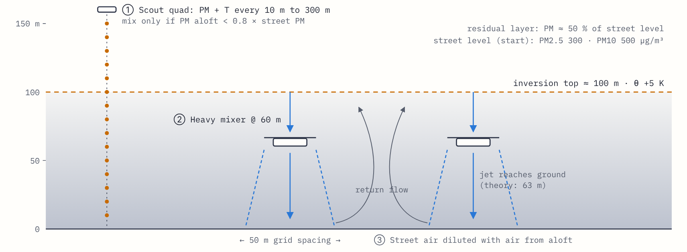
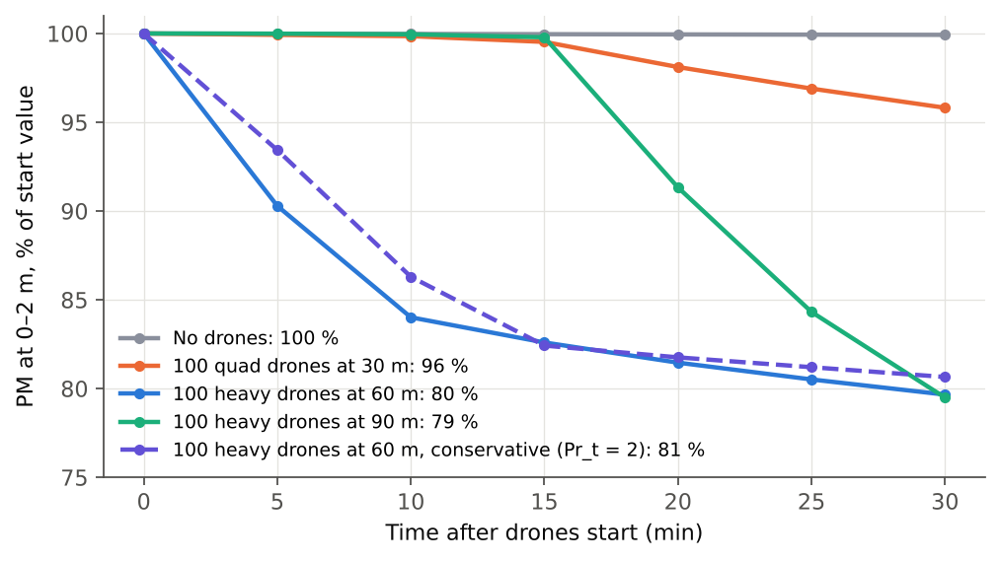
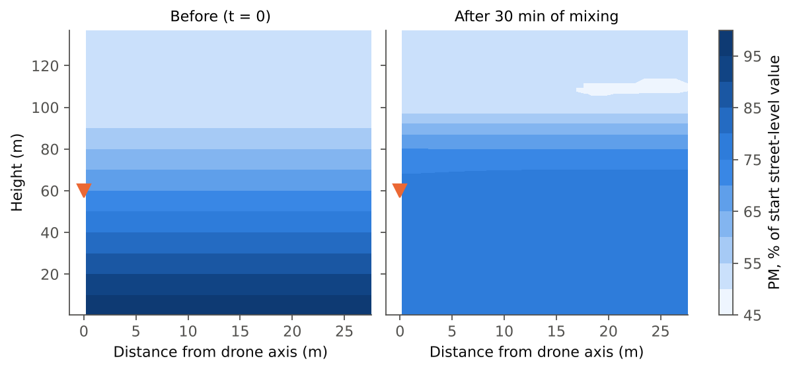
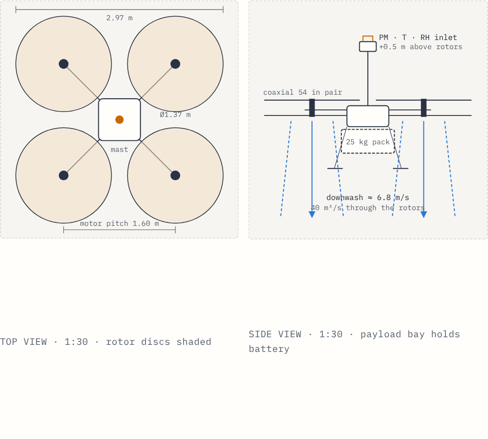
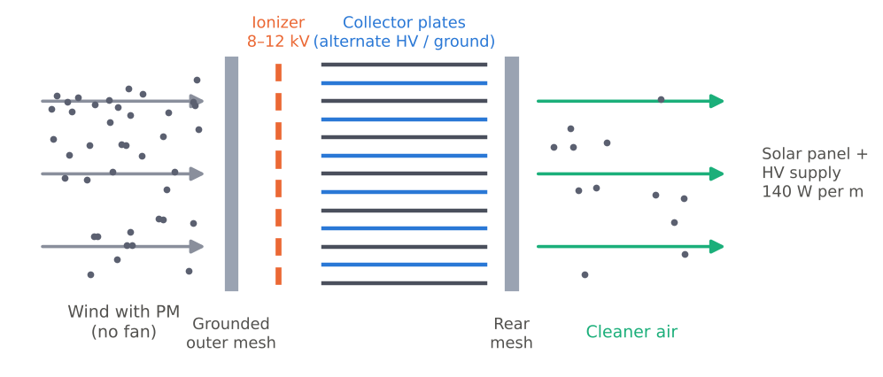
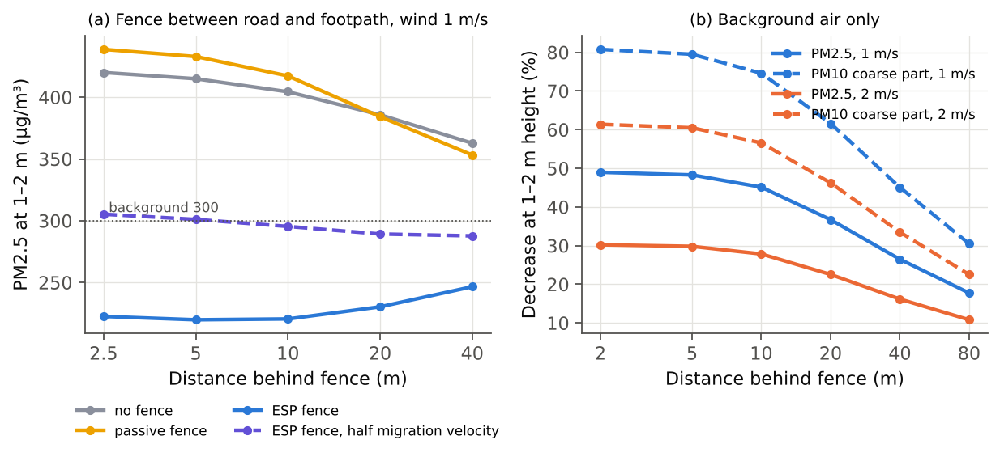
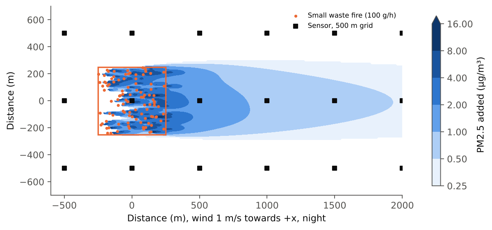
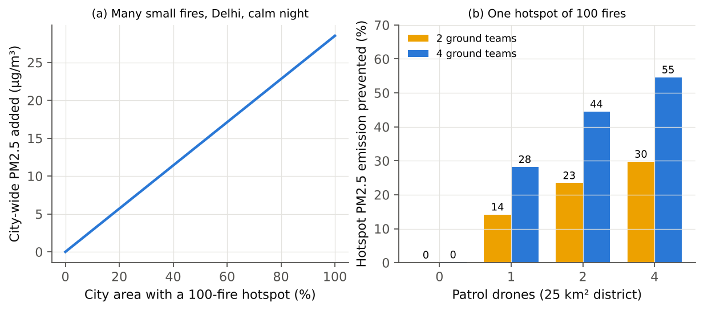

Title: Drone VS. AQI pilot to lower Delhi AQI
Author: Noorul Ali, techstudio.art
Correspondence: hello@techstudio.art
Abstract
Introduction
Methods
Results
Environmental impact
Pilot and test plan
Use in other Indian cities
Discussion
References
Appendix
Each winter, air in Delhi has dangerously high Air Quality Index (AQI) numbers. After Diwali and during the crop-residue burning season (stubble burning), PM2.5 and PM10 stay at severe levels for many days. A temperature inversion keeps the smoke near the ground. Low wind and no rain make the problem worse.
This report recommends a pilot project to test three AQI control techniques. Technique 1 is inversion mixing. Heavy-lift drones push cleaner air from above the inversion down to street level. Technique 2 is electrostatic wind fence. This fence charges particles and collects them on metal plates. Wind moves air through the fence, so the fence needs no fans. Technique 3 is 24x7 pollution-source surveillance. Patrol drones with thermal cameras find open fires quickly to report and tackle on the ground.
All work in this report is done with computer simulations. These simulations use standard methods from the scientific literature. The results are as follows: inversion mixing with 100 heavy drones decreased street-level particulate matter (PM) by 19 - 20 % in 30 minutes in a 500m × 500m zone. An electrostatic fence between a road and a footpath decreased footpath PM2.5 by 47 %. Surveillance with two patrol drones and four ground teams prevented 44 % of the PM2.5 from a hotspot of 100 small open fires. PM sensors cannot find these small fires, but together the fires can add up to 29 µg/m³ to the PM2.5 of a city.
These numbers are calculations not measurements. A field pilot is necessary to measure real values. We request the Government of NCT of Delhi and its agencies to support a pilot in winter 2027. Planning throughout 2026 and 2027 shall culminate in a feasibility study in winter 2027. Results of this study shall inform and design effective pollution control strategies for Delhi. These three techniques can also operate in other Indian cities suffering the same pollution problem every winter.
A. The problem
Delhi has some of the highest particle pollution of any large city. Long exposure to PM2.5 causes heart and lung disease and early death [1, 2]. In November, smoke from crop-residue fires in Punjab and Haryana adds to local pollution from traffic, dust, waste fires and industry [3].
On calm winter nights, the ground cools quickly. A layer of cold air forms below warmer air. This is a temperature inversion. The inversion stops vertical mixing, so pollution stays in a shallow layer near the ground [4, 5]. The air above the inversion often has less pollution than the air at street level.
B. Why we use simulations now
A field test of new equipment needs one full winter, permits and much money. Simulations let us test many designs before we build hardware. Computational fluid dynamics (CFD) is a standard tool for urban air-flow and pollution studies [6]. We use only methods that other researchers have published and tested. Where a method has a known error, we show the direction of the error. Where possible, we also show a conservative result.
The pollution in Delhi is at an extreme level each winter, and millions of people are at risk. It is not correct to wait for complete data before we start. Simulations give the best available guide now. The pilot will then give the measurements that are necessary to make a decision.
C. The three techniques
Technique | What it does | Scale | Main hardware |
1. Inversion mixing | Pushes cleaner air from aloft down to street level | Neighbourhood (25 ha per 100 drones) | Heavy-lift drones, scout quad drones |
2. Electrostatic wind fence | Removes PM from air that the wind moves through the fence | Road corridor, footpath, school edge | Fence modules with ionizer and collector plates |
3. 24x7 source surveillance | Finds open fires and other sources and starts a quick response | District (25 km²) to city | Low-cost sensor grid, patrol drones with thermal cameras |
A. Common conditions
All cases use a typical severe night in November: PM2.5 = 300 µg/m³ and PM10 = 500 µg/m³ at street level. PM10 has a higher mass than PM2.5, as in measured Delhi episodes. We calculated PM2.5 and the coarse part of PM10 separately where their behaviour is different.
B. Technique 1: inversion mixing
We used the open-source CFD code OpenFOAM (version v1912). The model solves time-dependent Reynolds-averaged flow equations (URANS) with the standard k-ε turbulence model [7]. The Boussinesq method gives the buoyancy force of the stable air layer. The inversion has a temperature increase of 5 K over the lowest 100 m. The air above 100 m is neutral and has 50 % of the street-level PM.
Each drone is an actuator disk with thrust equal to its weight. The heavy drone has a take-off mass of 50 kg and a total rotor area of 5.9 m². The fleet has 100 drones on a 50 m grid. We modelled one drone in a cylindrical unit cell of radius 28.2 m with symmetry walls. This is the standard method for a large uniform array. The jet penetration agrees with the classical theory for jets in stable fluid [8, 9].
The standard k-ε model does not decrease turbulence in stable air. As a result, it calculates too much mixing. To show this effect, we also ran a conservative case. In this case, the turbulent Prandtl number is 2.0, which is in the range for stable boundary layers [10]. A larger value gives less vertical mixing of heat and PM.
C. Technique 2: electrostatic wind fence
We used two-dimensional steady RANS with the k-ε model. The inlet wind profile and the ground roughness follow Richards and Hoxey [11]. PM is a passive scalar with a turbulent Schmidt number of 0.7 [12]. The fence is 6 m high and 0.5 m deep. It is a porous zone with a pressure-loss coefficient of 1.5. Inside the fence, PM decreases at a rate set by the Deutsch-Anderson equation [13]. The migration velocity is 0.04 m/s for PM2.5 and 0.12 m/s for coarse PM. These values are in the low range of industrial electrostatic precipitators [14, 15].
We ran two configurations. In the first configuration, only background air flows through the fence. In the second configuration, the fence is between a two-lane road and a footpath. The road is a line source of PM, as in near-road barrier studies [16, 17]. Without a fence, the road adds 40 % to the background PM on the footpath. We compared no fence, a passive fence (no electric charge) and the electrostatic fence. We also ran the electrostatic fence with half the migration velocity, as a conservative case.
D. Technique 3: 24x7 source surveillance
The source is a hotspot of 100 small open fires of domestic waste in a 500 m × 500 m area. Each fire burns 100 g of waste per hour for 4 hours. The PM2.5 emission factor is 10 g/kg [19]. As a result, each fire emits 1 g/h of PM2.5 and the hotspot emits 100 g/h.
We calculated the PM2.5 field of the hotspot with the Gaussian plume model and the Briggs urban dispersion coefficients [18]. The field is the sum of the plumes of all fires. Low-cost PM sensors [20] are on a square grid at a height of 3 m. The network gives an alert when the 1-hour average at one sensor increases by more than 10 µg/m³. We calculated the probability of detection with 400 random hotspots and wind directions.
Patrol drones with thermal cameras fly a fixed route over a 25 km² district. When a drone finds a hotspot, it makes a map of all fires in 6 minutes. Then the ground teams go to each fire. With a map, a team needs 6 minutes for each fire. Without a map, a team needs 20 minutes for each fire. Satellite fire data [21] covers crop-residue fires outside the city.
To show the effect of many hotspots on the whole city, we used a box model of the city air [4]. The box has the area of Delhi (1,483 km²), a mixing height of 150 m and a wind of 1 m/s.
A. Technique 1: inversion mixing

Figure 1: Inversion-mixing operation. (1) A scout quad drone measures PM and temperature every 10 m up to 300 m. (2) The team starts mixing only if the air aloft has less PM. (3) Heavy drones at 60 m push cleaner air down to street level.
Figure 2 shows street-level PM (0 m to 2 m) during 30 minutes of operation. Heavy drones at 60 m decreased PM by 20 %. Most of this decrease occurred in the first 10 minutes. Heavy drones at 90 m gave a decrease of 21 %, but the effect started only after 15 minutes. Quad drones gave only 4 %, because their jets are too weak. Without drones, the change was 0.1 %.
The conservative case (Prt = 2.0) gave a decrease of 19 %. The result changed only a little. This shows that the jets and the return flow of the drones do most of the mixing. Small-scale turbulence does less. Wind replaces the air in the zone and decreases the effect. With a wind of 1 m/s, we calculate approximately one half of these values.

Figure 2: Street-level PM during inversion mixing, as a percentage of the start value. 100 drones on a 50 m grid over a 500 m × 500 m zone.

Figure 3: PM distribution around one heavy drone at 60 m (triangle), before and after 30 minutes of mixing.
The heavy drone needs 6.8 kW to hover. 100 drones need approximately 0.68 MW. An 8-hour night needs approximately 5.4 MWh per 25 ha. Orchard frost fans use a similar energy per hectare to break inversions [22].

Figure 4: IM-50 heavy mixer concept design: 50 kg take-off mass, four pairs of coaxial 54 in rotors, sensor mast 0.5 m above the rotors. The 25 kg payload is a second battery.
B. Technique 2: electrostatic wind fence

Figure 5: Principle of the electrostatic wind fence. The ionizer charges the particles. The electric field between the plates moves the particles onto the plates. The wind moves the air through the fence.
Figure 6a shows the road case with a wind of 1 m/s. Without a fence, footpath PM2.5 was 420 µg/m³. The electrostatic fence decreased it to 222 µg/m³. This is a decrease of 47 %. At 40 m behind the fence, the decrease was 32 %. With half the migration velocity, the decrease on the footpath was 27 %.
A passive fence without electric charge increased footpath PM2.5 by 4 %. As a result, the electrostatic collection gives the benefit, not the structure.
Figure 6b shows the case with background air only. At 2 m behind the fence, PM2.5 decreased by 49 % and the coarse part of PM10 decreased by 81 %. At a wind of 2 m/s, the PM2.5 decrease was 30 %. The air moves faster, so the particles have less time between the plates.

Figure 6: Electrostatic wind fence results. (a) Fence between a road and a footpath. (b) Background air only.
One metre of fence cleans 1.6 m³/s of air at a wind of 1 m/s. The high-voltage supply uses approximately 140 W per metre. This is approximately 90 J for each cubic metre of clean air. A drone with a filter uses more than 2,000 J/m³.
C. Technique 3: 24x7 source surveillance
Each small fire adds only 1.0 µg/m³ at 100 m downwind on a calm night. Figure 7 shows the field of one hotspot of 100 fires. Inside the hotspot, the mean increase is 2.1 µg/m³ at night and 0.6 µg/m³ in daytime. At 1 km downwind, the increase at night is 0.7 µg/m³.

Figure 7: PM2.5 added by one hotspot of 100 small waste fires (100 g of waste per hour each) on a calm night. The orange square is the 500 m × 500 m hotspot.
These values are much less than the background of 300 µg/m³ and less than the noise of low-cost sensors. As a result, the sensor network found the hotspot in only 1 % of cases, at all grid spacings. PM sensors cannot find small fires. Thermal cameras on patrol drones are necessary.
Many hotspots together have a large effect (Figure 8a). If 10 % of Delhi has hotspots of this size, the PM2.5 of the city increases by approximately 3 µg/m³. If all of Delhi has such hotspots, the increase is approximately 29 µg/m³. This is approximately 10 % of the background.
Figure 8b shows the PM2.5 emission that surveillance prevents in one hotspot. Without patrol drones, the system prevented almost no emission. With two drones and two ground teams, it prevented 23 %. With two drones and four ground teams, it prevented 44 %. Each hotspot has 100 fires, so the number of ground teams limits the result.

Figure 8: Surveillance results. (a) City-wide PM2.5 added by small fires, for different areas of the city with hotspots. (b) PM2.5 emission prevented in one hotspot, for different numbers of patrol drones and ground teams.
The table gives the likely effect of each technique in one pilot zone. These values come from the simulations. The pilot must measure them.
Technique | Likely benefit | Area of benefit | Possible negative effects |
Inversion mixing (100 heavy drones) | Street-level PM 19 % to 20 % lower on calm nights | 25 ha zone | Noise at night; energy use; no benefit if a smoke layer is aloft |
Electrostatic wind fence (per 100 m) | Footpath PM2.5 approximately 47 % lower; coarse PM 81 % lower | Strip 40 m deep behind the fence | Ozone from the ionizer; waste dust from plate cleaning |
24x7 surveillance (25 km² district) | 44 % of the PM2.5 from each hotspot prevented (approximately 178 g per hotspot each night); city PM2.5 up to 13 µg/m³ lower if used in all of Delhi | Whole district | Privacy of camera data; drone noise |
Inversion mixing does not remove PM from the atmosphere. It mixes PM into a deeper layer. This decreases the concentration that people breathe. At the average population density of Delhi (Census of India 2011), a 25 ha zone contains approximately 2,800 people.
The electrostatic fence removes PM from the air. Each metre of fence collects approximately 90 g of PM per day in a severe episode. The operator must collect this dust and send it to an approved waste facility. Ionizers can make ozone [23]. The design must use positive corona and carbon-fibre emitters to keep ozone low. The pilot must measure ozone near the fence.
Surveillance prevents emissions at the source. In one hotspot, the system prevents approximately 178 g of PM2.5 each night. The drone maps also show the sites where people burn waste again and again. The city can use these maps to improve waste collection and to prevent the fires. Open burning also makes toxic gases [19], so early action gives an additional health benefit.
The pilot has one aim: to measure the real benefit of each technique and to compare it with the simulations. Each technique has a test zone and a control zone with the same conditions.
Phase | Period | Work | Result |
0. Simulation | 2026 (complete) | CFD and dispersion models in this report | Designs and expected results |
1. Prototypes | Jan 2027 to Jun 2027 | Build 1 heavy drone, 2 scout drones, 20 m of fence, 50 sensors; bench tests | Measured thrust, power, fence efficiency, ozone |
2. Baseline | Jul 2027 to Sep 2027 | Install sensors in test and control zones; measure without operation | Baseline PM and weather data |
3. Winter pilot | Oct 2027 to Jan 2028 | Operate all three techniques; measure every night | Measured PM decrease against control zones |
4. Report | Feb 2028 to Mar 2028 | Compare measurements with simulations; calculate costs | Decision to scale or stop |
A. Test zones
1. Inversion mixing: one 500 m × 500 m zone at the edge of the city, in a green zone for drone operation. Start with 10 heavy drones, then increase to the full fleet if the first results are positive.
2. Electrostatic fence: 100 m of fence on a road wall next to a school or hospital footpath.
3. Surveillance: one 25 km² district with known waste-burning problems. Use 2 patrol drones with thermal cameras, 4 ground teams and a sensor grid for background data.
B. Measurements
Technique | Measurement | Instrument | Pass criterion |
Inversion mixing | PM profile 0 m to 300 m; street PM in test and control zones; noise | Scout drone sensors; reference monitor; sound meter | Street PM at least 10 % lower than control on calm nights |
Electrostatic fence | PM2.5 and PM10 at 2 m, 10 m and 40 m behind the fence; ozone; power | Calibrated sensors; ozone analyser | PM2.5 at least 20 % lower; ozone within national standard |
Surveillance | Number of fires found; time to find a hotspot; time to stop all fires | Drone thermal camera logs; field counts by ground teams | Drones find at least 90 % of the fires that ground teams count; mean time to find a hotspot less than 60 minutes |
C. Support that we request
1. Permission to operate drones at night and above 120 m in the pilot zones.
2. Access to sites, walls and electrical power for the fence and the sensors.
3. Access to data from the regulatory monitors and a link to the enforcement teams for fire response.
4. A joint technical committee with the pollution control agencies to review the results.
Many cities in the Indo-Gangetic Plain have the same winter inversions as Delhi. Examples are Lucknow, Kanpur, Agra, Varanasi and Patna. Inversion mixing can operate in these cities on calm winter nights. The scout drone shows if the conditions are correct before each operation.
The electrostatic fence can operate on any busy road in any city. Mumbai, Kolkata, Bengaluru, Chennai and Hyderabad have long road corridors with footpaths next to heavy traffic. The fence modules attach to walls, flyovers and noise barriers that are already there. As a result, the fence needs no new land.
Open waste burning occurs in cities across India. A sensor grid and patrol drones can operate in any municipal ward. The system also gives data for the city action plans of the National Clean Air Programme (NCAP).
A. Limits of the simulations
1. Inversion mixing: the k-ε model calculates too much mixing in stable air. The unit cell does not include wind or the edges of the zone. As a result, the results are an upper limit. The conservative case tests only the turbulent transport of heat and PM. In Phase 1, we will also use a turbulence model with a buoyancy term and a three-dimensional model of the full fleet.
2. Electrostatic fence: the model is two-dimensional, so it does not include air flow around the ends of the fence. The migration velocities come from industrial practice. The model does not include dirt on the plates or calm air.
3. Surveillance: the Gaussian plume model is approximate near buildings. The emission factor of waste fires has a large range. The model assumes that a thermal camera at patrol height can find a fire that burns 100 g/h. The pilot must test this. The model does not include false alarms.
B. Why the simulations are a correct basis for a pilot
Each model uses published and tested methods. Where a model has a known error, we show its direction and we give a conservative case. Each technique shows a clear benefit even in the conservative cases. A pilot is the correct next step because it measures the real effect at a small cost before a large investment.
C. Conclusion
The simulations show that each technique can decrease the PM that people breathe. Inversion mixing decreases street-level PM by 19 % to 20 % in a zone. The electrostatic fence decreases footpath PM2.5 by approximately 47 %. PM sensors cannot find small waste fires, but patrol drones and ground teams can prevent approximately 44 % of their emission. We recommend a pilot in winter 2027 to measure these effects in Delhi.
[1]: Pope CA, Dockery DW. Health Effects of Fine Particulate Air Pollution: Lines that Connect. Journal of the Air & Waste Management Association 56(6):709-742 (2006). Link
[2]: Guttikunda SK, Goel R. Health impacts of particulate pollution in a megacity—Delhi, India. Environmental Development 6:8-20 (2013). Link
[3]: Cusworth DH, Mickley LJ, Sulprizio MP, Liu T, Marlier ME, DeFries RS, et al. Quantifying the influence of agricultural fires in northwest India on urban air pollution in Delhi, India. Environmental Research Letters 13(4):044018 (2018). Link
[4]: Stull RB. An Introduction to Boundary Layer Meteorology. Springer Netherlands (1988). Link
[5]: Mahrt L. Stably Stratified Atmospheric Boundary Layers. Annual Review of Fluid Mechanics 46(1):23-45 (2014). Link
[6]: Blocken B. Computational Fluid Dynamics for urban physics: Importance, scales, possibilities, limitations and ten tips and tricks towards accurate and reliable simulations. Building and Environment 91:219-245 (2015). Link
[7]: Launder BE, Spalding DB. The numerical computation of turbulent flows. Computer Methods in Applied Mechanics and Engineering 3(2):269-289 (1974). Link
[8]: Turner JS. Jets and plumes with negative or reversing buoyancy. Journal of Fluid Mechanics 26(4):779-792 (1966). Link
[9]: List EJ. Turbulent Jets and Plumes. Annual Review of Fluid Mechanics 14(1):189-212 (1982). Link
[10]: Zilitinkevich SS, Elperin T, Kleeorin N, Rogachevskii I, Esau I. A Hierarchy of Energy- and Flux-Budget (EFB) Turbulence Closure Models for Stably-Stratified Geophysical Flows. Boundary-Layer Meteorology 146(3):341-373 (2012). Link
[11]: Richards PJ, Hoxey RP. Appropriate boundary conditions for computational wind engineering models using the k-ϵ turbulence model. Journal of Wind Engineering and Industrial Aerodynamics 46-47:145-153 (1993). Link
[12]: Tominaga Y, Stathopoulos T. Turbulent Schmidt numbers for CFD analysis with various types of flowfield. Atmospheric Environment 41(37):8091-8099 (2007). Link
[13]: Mizuno A. Electrostatic precipitation. IEEE Transactions on Dielectrics and Electrical Insulation 7(5):615-624 (2000). Link
[14]: White HJ. Particle Charging in Electrostatic Precipitation. Transactions of the American Institute of Electrical Engineers 70(2):1186-1191 (1951). Link
[15]: Jaworek A, Krupa A, Czech T. Modern electrostatic devices and methods for exhaust gas cleaning: A brief review. Journal of Electrostatics 65(3):133-155 (2007). Link
[16]: Baldauf R, Thoma E, Khlystov A, Isakov V, Bowker G, Long T, et al. Impacts of noise barriers on near-road air quality. Atmospheric Environment 42(32):7502-7507 (2008). Link
[17]: Hagler GSW, Tang W, Freeman MJ, Heist DK, Perry SG, Vette AF. Model evaluation of roadside barrier impact on near-road air pollution. Atmospheric Environment 45(15):2522-2530 (2011). Link
[18]: Hanna SR, Briggs GA, Hosker RPJ. Handbook on atmospheric diffusion. Office of Scientific and Technical Information (OSTI) (1982). Link
[19]: Wiedinmyer C, Yokelson RJ, Gullett BK. Global Emissions of Trace Gases, Particulate Matter, and Hazardous Air Pollutants from Open Burning of Domestic Waste. Environmental Science & Technology 48(16):9523-9530 (2014). Link
[20]: Snyder EG, Watkins TH, Solomon PA, Thoma ED, Williams RW, Hagler GSW, et al. The Changing Paradigm of Air Pollution Monitoring. Environmental Science & Technology 47(20):11369-11377 (2013). Link
[21]: Schroeder W, Oliva P, Giglio L, Csiszar IA. The New VIIRS 375 m active fire detection data product: Algorithm description and initial assessment. Remote Sensing of Environment 143:85-96 (2014). Link
[22]: Battany MC. Vineyard frost protection with upward-blowing wind machines. Agricultural and Forest Meteorology 157:39-48 (2012). Link
[23]: Boelter KJ, Davidson JH. Ozone Generation by Indoor, Electrostatic Air Cleaners. Aerosol Science and Technology 27(6):689-708 (1997). Link
Parameter | Value |
Background PM2.5 / PM10 | 300 / 500 µg/m³ |
Inversion | +5 K over 0 m to 100 m; PM aloft 50 % of street level |
Heavy drone | 50 kg, 4 coaxial pairs of 54 in rotors, 5.9 m², hover at 60 m |
Fleet | 100 drones, 50 m grid, 500 m × 500 m |
Fence | 6 m high, 0.5 m deep, K = 1.5, plate area 20 m²/m³ |
Migration velocity | PM2.5 0.04 m/s; coarse PM 0.12 m/s |
Waste-fire hotspot | 100 fires in 500 m × 500 m; 100 g waste/h each; 10 g PM2.5/kg; 4 h without action |
Sensor alert | 10 µg/m³ above background (1-hour average) |
Ground teams | 6 min per fire with a drone map; 20 min per fire without a map |
Patrol drone | 36 km/h, 300 m camera width, 70 % flight time |
All simulation code and data are in the Drone V AQI repository (github.com/Tech-Studio-Art/dronevaqi), directory plans/sim.